Витебск
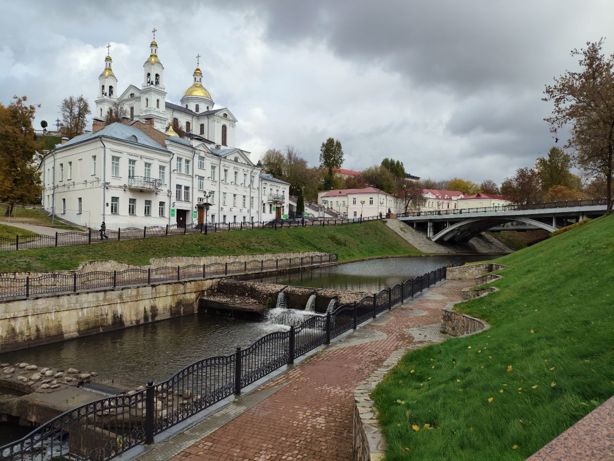
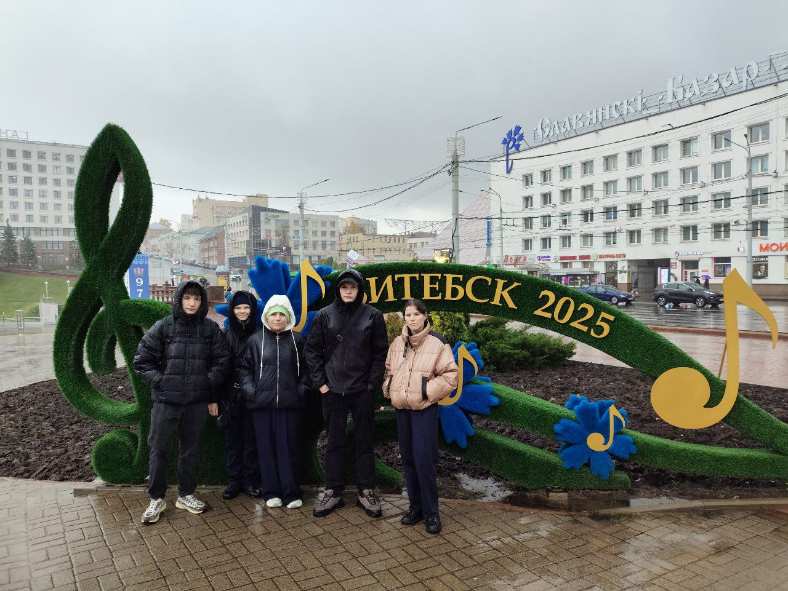
Северный регион Беларуси, административный центр Витебской области и Витебского района.
Этот прекрасный город расположен в восточной части области на реке Западная Двина. Занимает четвертое место в стране по численности населения после Минска, Гомеля и Гродно.
Памятник самому высокому человеку в мире ( так считают белорусы) находится в нашем городе. Скульптура в натуральную величину была установлена в сквере Владимира Маяковского, неподалеку от Ратушной площади, в июне 2018 года в качестве подарка на День города. Высоченное изваяние, которое вместе с цилиндром составляет 312 сантиметров - это Федор Махнов, уроженец Витебской губернии, который прожил короткую, но весьма яркую жизнь.
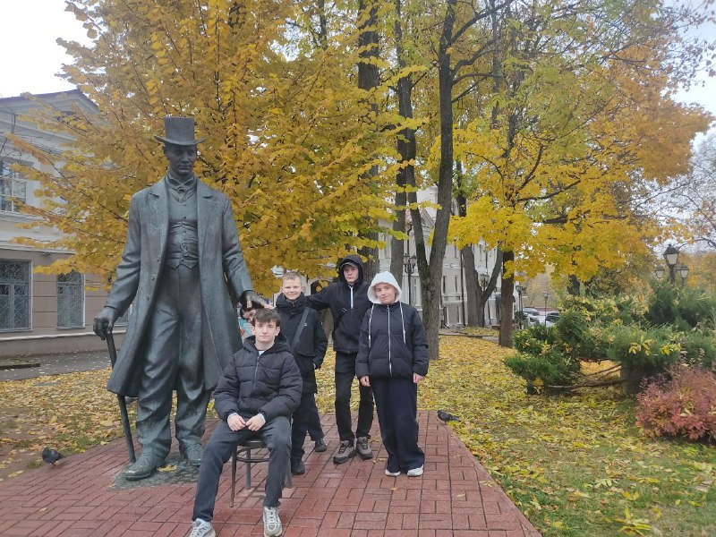
Скульптуру сказочного персонажа открыли в Витебске 23 июня 2017 года - в День города. Рыбка выполнена из композитного материала в бронзовом цвете. Высота скульптуры 2,3 м. Она символизирует один из традиционных промыслов и установлена рядом с местом, где по легенде был заложен древний Витебск.
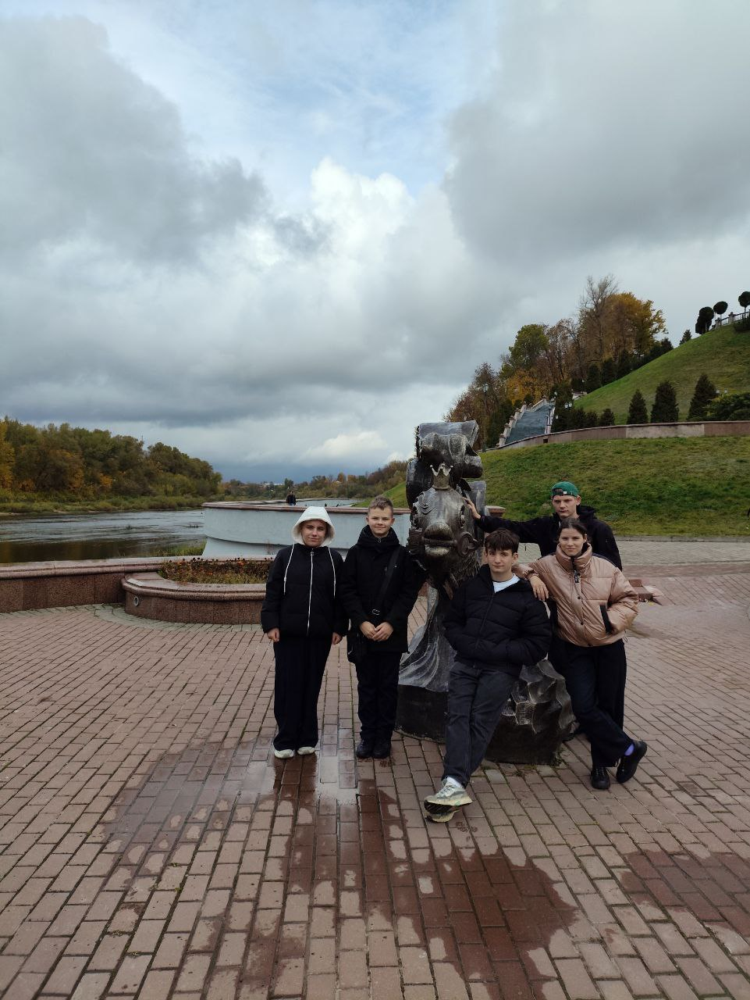
В день государственных символов Республики Беларусь в Витебске торжественно открыли площадь Герба и Флага. Для жителей города она стала не только символом гордости и патриотизма,но и пополнила число знаковых объектов областного центра.
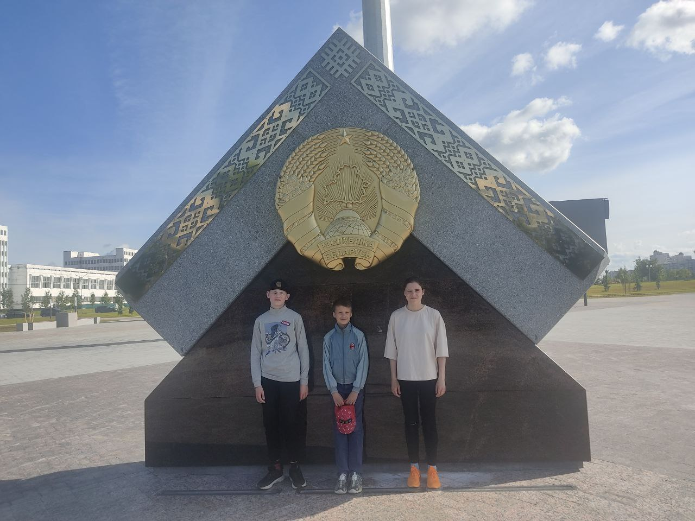
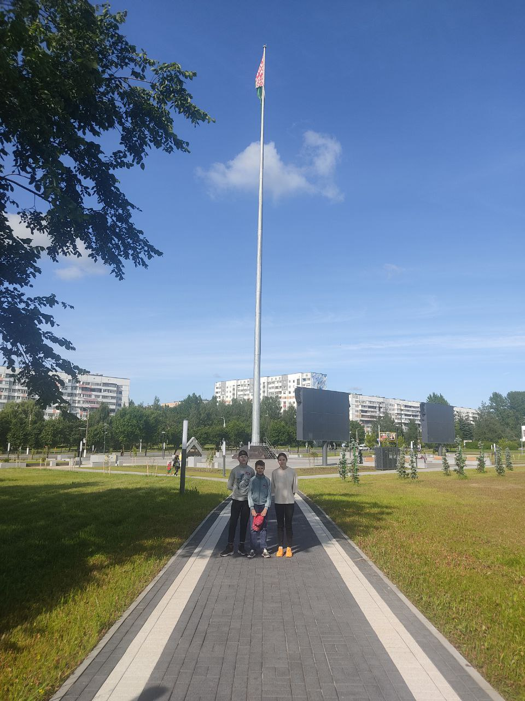
"Вежливый фонарь" , очередной проект Евгения Половинского, "поселился" на улице Крылова. Прохожие с удовольствием протягивают ему руку, а в ответ на рукопожатие он загорается и "приподнимает" шляпу.
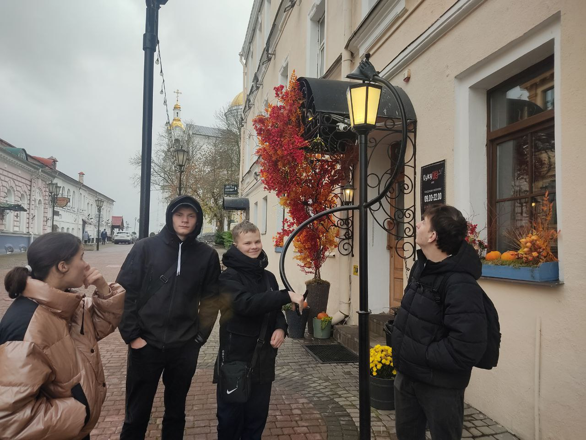
На крутой горе, на месте впадения Витьбы в Западную Двину, находятся Успенский собор и Свято-Духов женский монастырь. Эти достопримечательности нашего города гармонично вписываются в окружающий ландшафт и завораживают своей красотой.
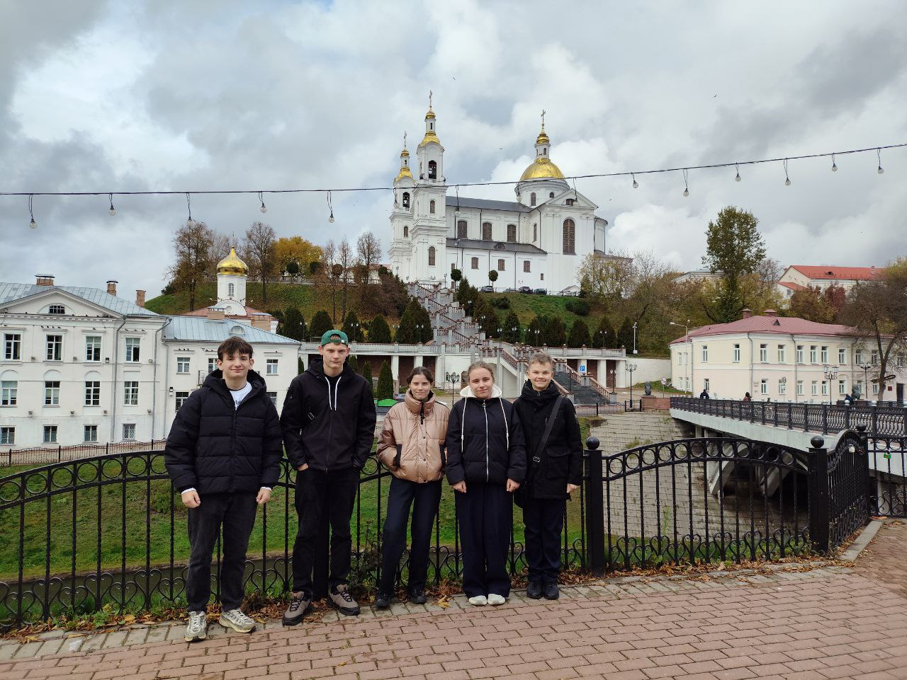
Арт-объект в миниатюре на площади перед городской Ратушей отображает центр Витебска конца XIX - начала XX века. Автором композиции выступил известный витебский скульптор, художник и педагог Сергей Сотников. Его основная идея заключалась в том, чтобы сделать объемный макет-план города стартовой точкой для обзорных экскурсий.
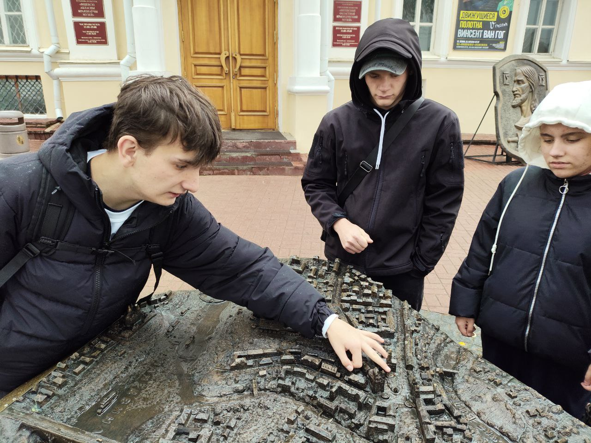
Витебск ежегодно собирает тысячи людей на Международный фестиваль искусств «Славянский базар в Витебске ". Он богат не только своей культурой, но и историческим прошлым. Восставший из пепла, после Великой Отечественной войны, город продолжает жить и процветать, радуя жителей своим великолепием.
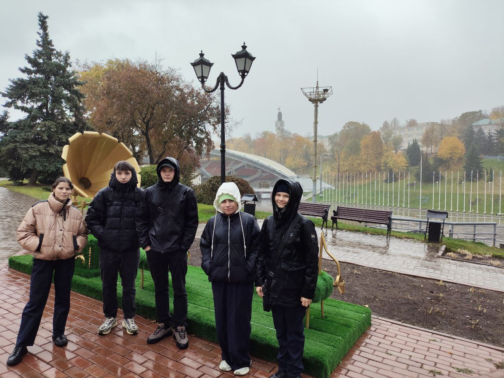
Наши учащиеся представили коллекцию одежды в рамках Международного фестиваля "Славянский базар в Витебске" на инклюзивном модном показе "Рука в руке".
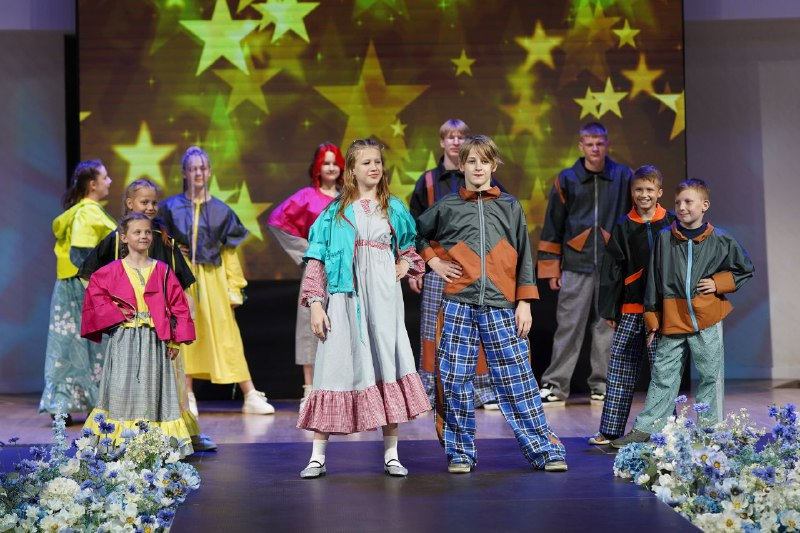
Среди достопримечательностей Витебска выделяются:
Пройди тест для закрепления результата.
Тест